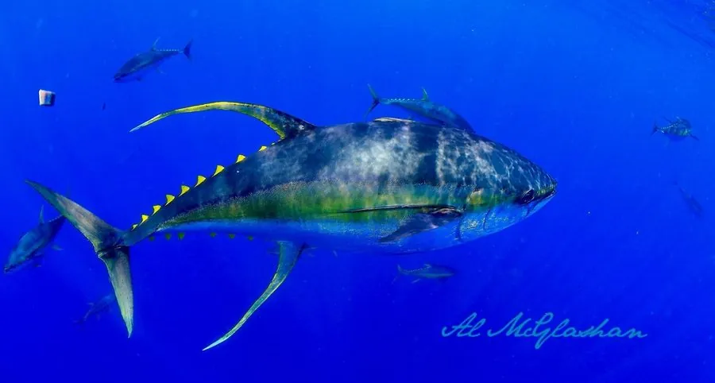

鱼类 · 动物界
黄鳍金枪鱼 Thunnus albacares

热带和亚热带大洋中的高速洄游鱼类，背鳍和臀鳍呈鲜黄色，是金枪鱼罐头和刺身的重要原料，全球渔业产量巨大。
- 分类
- 门脊索动物门纲硬骨鱼纲目鲈形目科鲭科属金枪鱼属
- 栖息环境
- 全球热带和亚热带大洋的上层水体，常随水温和饵料进行长距离洄游
- 地理分布
- 太平洋、大西洋和印度洋的热带、亚热带海域
- 保护级别
- IUCN 无危（LC）；中国未列入国家重点保护野生动物名录
物种志
黄鳍金枪鱼体呈纺锤形，体背深蓝，腹部银白，体侧有一条黄色纵带；第二背鳍和臀鳍呈鲜黄色并向后延长成镰刀状，这是它名称的由来。成鱼体长一般 1–2 m，体重 20–80 kg，最大可超过 2 m、体重 200 kg 以上。
黄鳍金枪鱼分布于全球热带和亚热带海洋，包括太平洋、大西洋和印度洋。它是高度洄游的鱼类，常结成大群，有时与鲣鱼和其他金枪鱼混群。黄鳍金枪鱼是肉食性动物，捕食小鱼、乌贼和甲壳类；繁殖期随海域不同，雌鱼一次可产数百万粒卵。它生长较快，是金枪鱼渔业的主要目标种之一，广泛用于罐头和刺身加工；与蓝鳍金枪鱼相比，黄鳍金枪鱼的资源状况相对较好，但部分海域的捕捞压力依然较大，区域性渔业组织已对其设置了管理措施。目前IUCN 将其评为无危，中国未将其列入国家重点保护野生动物名录。
形态与习性
- 食性捕食小鱼、乌贼和甲壳类
- 体长一般 1–2 m，最大可超过 2 m
- 体重常见 20–80 kg，最大可超过 200 kg
- 繁殖随海域不同产卵，雌鱼一次可产数百万粒卵
- 洄游高度洄游，常结成大群与其他金枪鱼混群
- 渔业金枪鱼罐头和刺身加工的主要原料之一
趣味知识
- 黄鳍金枪鱼的第二背鳍和臀鳍呈鲜黄色，名称由此而来。
- 它能保持较高的体温，在水中游速很快，是海洋中的高速猎手。
- 黄鳍金枪鱼是金枪鱼罐头的主要原料，也是刺身市场上的常见鱼种。